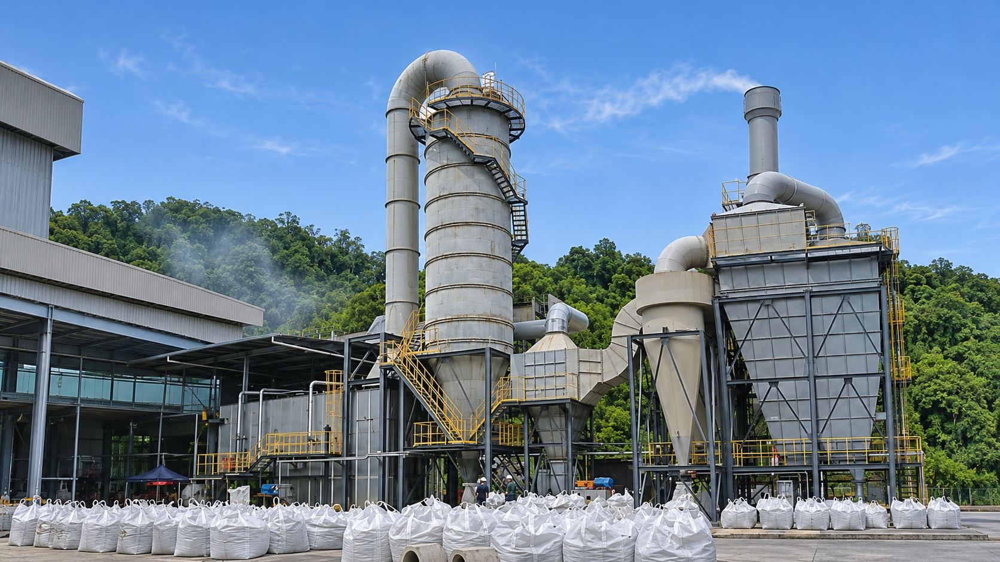
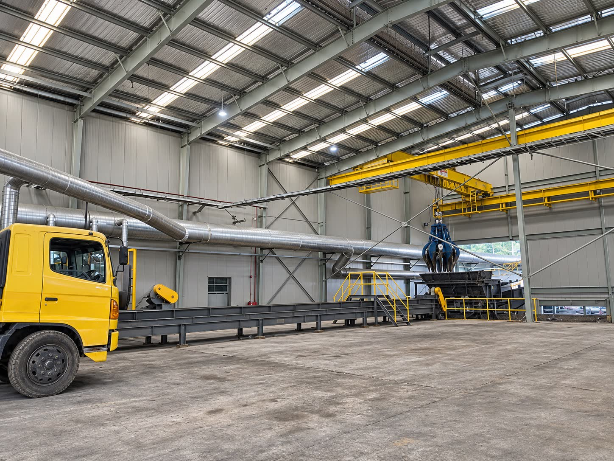
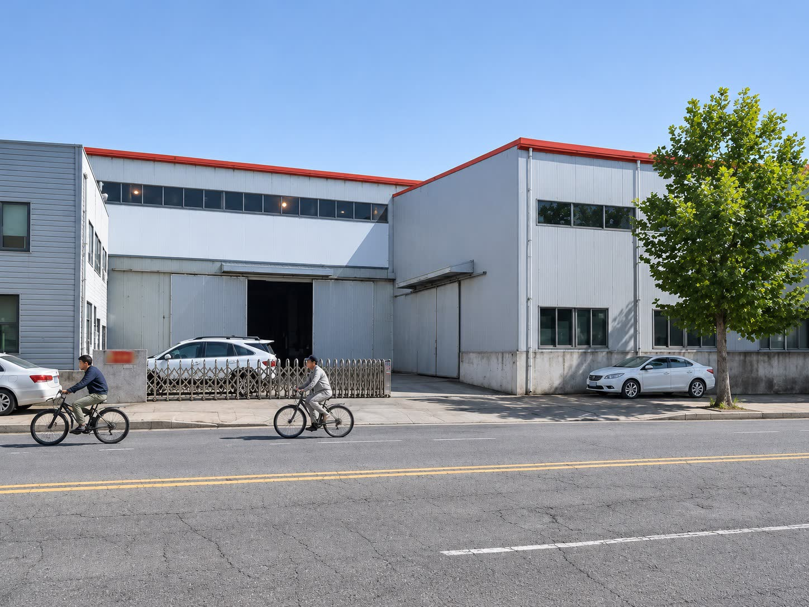

Clean power from city waste.
We design and build waste-to-energy plants that turn municipal, industrial and hospital waste into electricity, with patented low-NOx combustion.
Our technologyCEO message
“We put the customer's need for a clean environment first, and we keep improving our technology to meet it. Our goal is to be a company that partners around the world can trust.”
HYUCKJIN Energy Plant Engineering (HJE) has worked only in environmental engineering for more than 45 years. We burn waste completely, keep the flue gas clean, and send the heat to generate electricity for the communities and industries around the plant.
Our plants run in Korea and Malaysia, and governments in the Philippines, Indonesia, Vietnam, Cambodia and Costa Rica have asked us for proposals.
About the company →History
Founded as Korea agent for Lamborghini and Thermomec burners (Italy)
Developed gun-type heavy oil burner
Selected by the Ministry of Knowledge Economy for food-waste-to-fuel technology
Supplied dryer and deodorization system to Incheon landfill RDF facility
New RTO system solves food waste odor
Patents for waste food, livestock manure and eco-friendly processing
Contract with the Malaysian government for the Langkawi incinerator
Established H.J.E.C for manufacturing and export of large incinerators
Langkawi plant completed · Low-NOx incinerator patent · PHG system developed
Projects in development across Southeast Asia and Central America

In the news
Kosmo! · Malaysia · 7 March 2021
The plant built with HJE technology replaced a failed incinerator on Langkawi Island and now treats the island's municipal and tourism waste every day.
Langkawi project →Sustainability
Every tonne we burn is a tonne that does not go to landfill. Metals and glass are sorted out for recycling before combustion, and the remaining heat becomes electricity.
How it worksused for flue gas treatment, compared with conventional incinerators
generated per tonne of waste burned
in our patented low-NOx combustion
Technology
Waste arrives and is sorted. Metals, cans and glass are taken out for recycling.
Odor-laden air is used as combustion air and broken down above 250 °C.
Patented three-stage re-burn controls fuel/air mixing, oxygen and flame temperature.
Air pollution control with continuous stack monitoring (CMS/TMS).
Recovered heat drives turbines that supply electricity to the grid and industry.

Municipal, industrial and hospital waste incinerators and furnace systems.

Waste-to-energy power plant design, construction and operation support.

Pyrolysis hydrogen gasification (PHG) power plants with optimized gas burner and zeolite.
Projects
Plants built and projects under development worldwide.
Municipal and tourism waste incinerator for the Malaysian government. Replaced a previously failed plant. Odor and fly problems solved; stack emissions measured low. A second line is planned.

Municipal waste-to-energy plant on a 30-year BOT basis. Electricity for 17,250+ households and 35+ long-term jobs.
Industrial waste incinerator and an incinerator with electricity generation.
Hospital waste treatment and electricity generation from hospital waste.
Proposals requested by national governments following the Langkawi plant.
| Location | Client | Waste / fuel | Capacity | Main contractor |
|---|
Certification
Patents
Partners